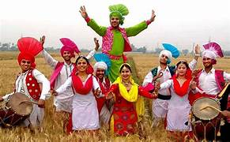
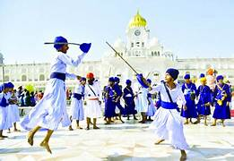
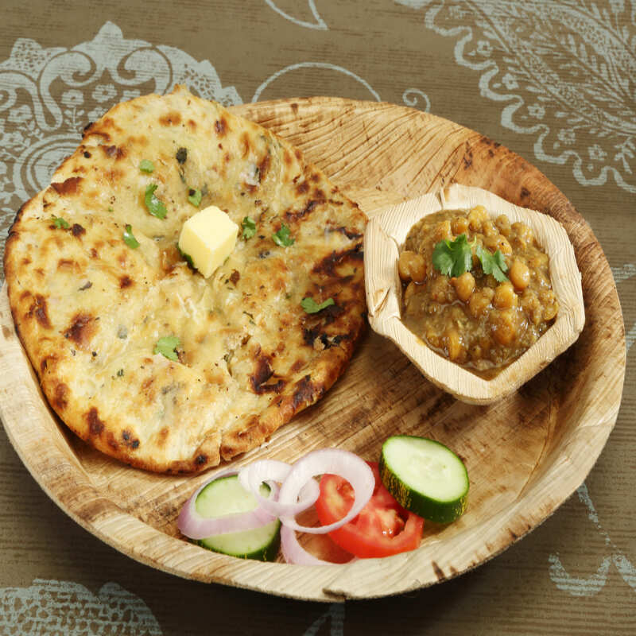

About Amritsar
Amritsar in Punjab is the spiritual center of the Sikh religion and home to the Golden Temple (Harmandir Sahib), one of the most peaceful and iconic religious sites in India.
Culture & Traditions
- Strong Punjabi and Sikh traditions
- Known for its Baisakhi festival and Gatka (Sikh martial art)
- Hospitality and Langar (free meals) at the temple reflect equality


Famous Dishes
- Amritsari Kulcha
- Chole Bhature
- Lassi (sweet yogurt drink)
- Sarson da Saag with Makki di Roti

Best Time to Visit
- November to March – pleasant climate and religious celebrations
Things To Do
- Visit the Golden Temple and enjoy Langar
- Watch the Wagah Border ceremony
- Explore Jallianwala Bagh
- Shop for Phulkari, Punjabi Juttis, and Amritsari Papad
Budget (Per Day)
- Budget: ₹800–₹1200
- Mid-range: ₹1500–₹2500
- Luxury: ₹3500+